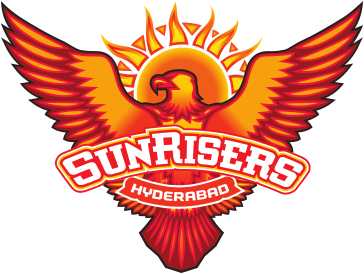

The Sunrisers Hyderabad are a professional Twenty20 cricket team based in Hyderabad, Telangana, that competes in the Indian Premier League (IPL).[5] The franchise is owned by Kalanithi Maran of Sun Group and was founded in 2013 after the Hyderabad-based Deccan Chargers were terminated by the IPL.[6] The team is currently coached by Daniel Vettori and captained by Pat Cummins. Their home ground is the Rajiv Gandhi International Cricket Stadium in Hyderabad, which has a capacity of 39,200.[4]